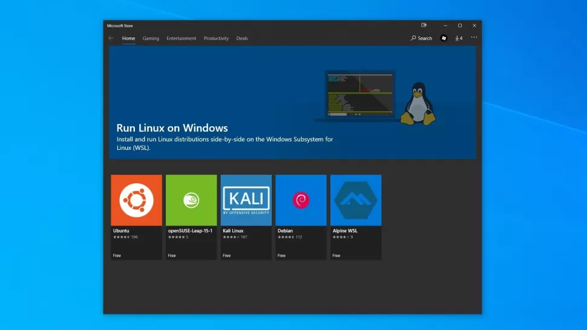

You can trust our in-depth technology reviews to help you buy the best product for your needs. Read our reviews guarantee to find out why.
The latest Windows 10 Insider Preview Build 20246 has further improved the Windows Subsystem for Linux, popularly referred to as WSL. Users of this latest Insider Preview build, available in the Dev Channel, can now get a fully functional Linux environment on a fresh Windows 10 installation, with just a single command. The feature has essentially been rolled out in two stages. With the Insider Preview Build 20150, released earlier this year in June 2020, the developers first introduced the [wsl.exe --install] command.